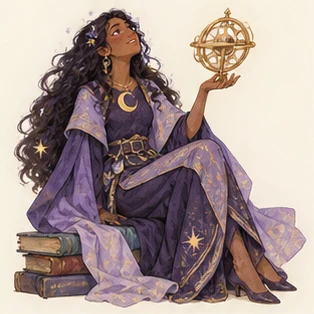
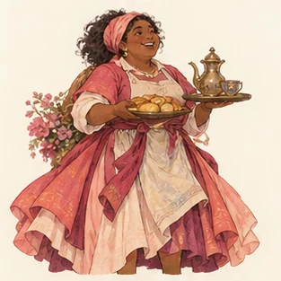

01ENERJİ
E ↔ I
Dışa dönüklük / İçe dönüklük
Dikkatini ve enerjini daha çok dış dünyadan mı, iç dünyandan mı toplarsın? Herkes ikisini de kullanır.
E: konuşarak düşünmeI: düşünerek konuşma
Bir kalıba sığmak için değil, kendini daha iyi anlamak için. 16 farklı bakış açısı, bir sürü yeni soru ve tamamen sana ait bir yolculuk.


01 / TİPLER ATLASI
Her kartta güçlü yanlar, zorlanmalar, ilişkiler, çalışma biçimi ve gelişim için bir öneri var. Bir tipe tıkla, sayfayı aç.
Bu aramaya uygun bir tip bulunamadı.
02 / MBTI REHBERİ
MBTI, dört tercih çiftini bir araya getirir. Harfler beceri, zekâ veya yetenek puanı değildir; hangi yaklaşımın daha doğal gelebileceğini anlatır.
Dikkatini ve enerjini daha çok dış dünyadan mı, iç dünyandan mı toplarsın? Herkes ikisini de kullanır.
Bilgiyi işlerken somut ayrıntı ve deneyime mi, örüntü ve olasılıklara mı öncelik verirsin?
Karar verirken mantıksal tutarlılık ve ilkelere mi, değerler ve insan etkisine mi ağırlık verirsin?
Dış dünyayla ilişkinde kararları kapatmayı mı, seçenekleri açık tutmayı mı tercih edersin?
BİR ADIM DERİNE
Tip dinamikleri, algılama (S/N) ve karar verme (T/F) süreçlerinin içe veya dışa yönelmiş hâllerini inceler. Se, Si, Ne, Ni, Te, Ti, Fe ve Fi kısaltmaları bu sekiz yönelimi anlatır. Her tipte baskın, yardımcı, üçüncül ve daha az tercih edilen işlev sırası önerilir.
Bu betimlemeler kuramın sadeleştirilmiş yorumlarıdır; kişiler işlevleri yalnızca tek bir sırayla kullanmaz.
Sonucunu bir hipotez gibi ele al. Tip açıklamasındaki örnekleri kendi deneyiminle karşılaştır; güçlü yön kadar zorlanma örüntülerini de düşün. Yakın eksenler için komşu tipleri oku.
Beş Faktör yaklaşımı kişilik özelliklerini sürekli boyutlarda ölçer; MBTI ise tercihleri tip kategorileriyle anlatır. Farklı sorulara yanıt verirler. Bu kısa testin psikometrik geçerliği ayrıca gösterilmiş değildir.
Tipler birini işe seçmek, ilişki uyumunu kesinleştirmek veya ruh sağlığı tanısı koymak için kullanılmamalıdır.
03 / BAŞKA BİR MERCEK
MBTI daha çok tercih ettiğin düşünme ve davranma biçimlerini, Enneagram ise temel motivasyon ve korku örüntülerini konuşur. Biri diğerinden otomatik olarak çıkarılamaz.
Kanatlar (ör. 4w5), komşu tiplerin etkisini anlatan Enneagram kavramıdır. İçgüdü alt tipleri ve gelişim çizgileri de bu modelin ileri başlıklarıdır; bunlar MBTI harfleriyle bire bir eşleşmez.
04 / SAYILARA BAKIŞ
“Dünyada yüzde kaç?” sorusu için güvenilir tek bir küresel oran yok. Aşağıdaki değerler, sık alıntılanan 1998 MBTI Manual ABD örneklemindeki yaklaşık paylardır; dünya nüfusunu veya bugünü temsil etmez.
KENDİ ROTANI BUL
32 kısa soruyla dört tercih eksenindeki eğilimini gör. Sonucu kaydet, geri dön, yeniden düşün.
05 / MERAK EDİLENLER
Hayır. Karakter Atlası'nın 32 soruluk özgün, eğitsel öz değerlendirmesidir. Resmî MBTI® envanteri ve uzman yorumlamasının yerini almaz.
Olabilir. Yanıtlar ruh hâli, bağlam, yaş ve soruların yorumlanmasına göre değişebilir. Özellikle iki tercih birbirine yakınsa sonucu kesin kimlik etiketi gibi kullanma.
Hayır. MBTI dört tercih çiftini, Enneagram dokuz motivasyon örüntüsünü ele alır. Bir MBTI tipinin tek bir zorunlu Enneagram karşılığı yoktur.
Tek başına vermez. Bir mesleğe uygunluğu, partner uyumunu veya ruh sağlığını dört harften çıkarmak doğru değildir. Deneyim, değerler, beceriler ve koşullar da önemlidir.
Google girişi etkinleştirildiğinde test sonucunu hesabınla ilişkilendirebilirsin. Giriş yapmadan çözersen sonuç yalnızca bu tarayıcıda saklanır.